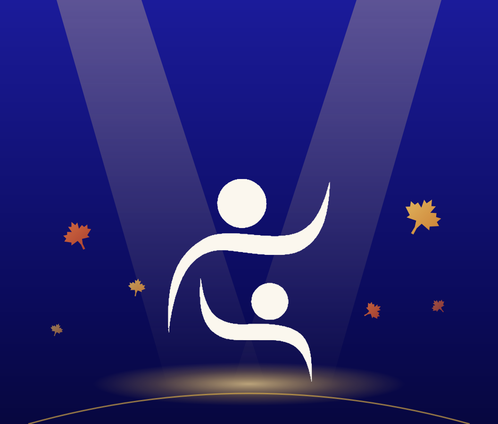
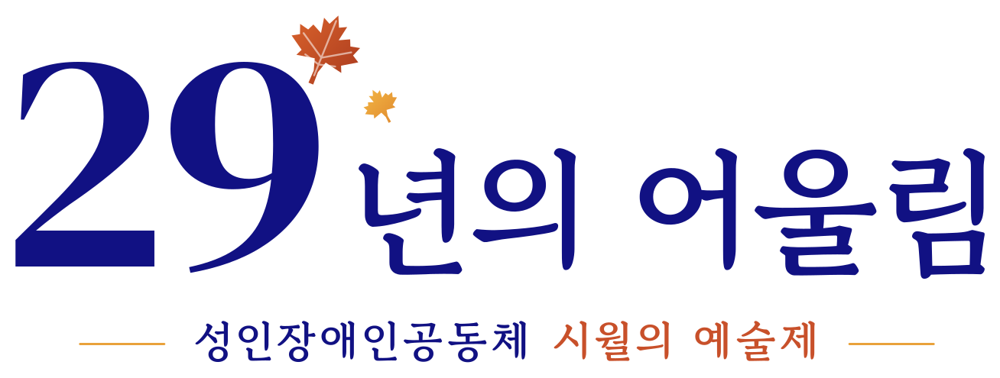

KCPCAC · SINCE 1997
성인장애인공동체 창립 29주년
회원들이 직접 꾸미는 무대
한 해 동안 함께 배우고 준비한 공연과 미술 작품을 선보입니다

29 Years in Harmony · KCPCAC October Arts Festival
서로 다른 소리가 만나 하나의 노래가 됩니다
2026.10.31
(토)
오후 2시
구세군 노스욕 교회
25 Centre Ave, North York, ON M2M 2L4
입장 무료 · 누구나 환영합니다
휠체어 이용 가능 · 엘리베이터 · 넉넉한 주차 공간
주최 성인장애인공동체 · 문의 416-457-6824